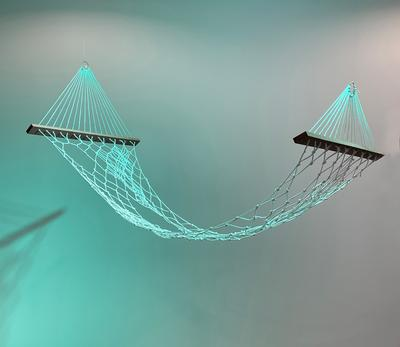
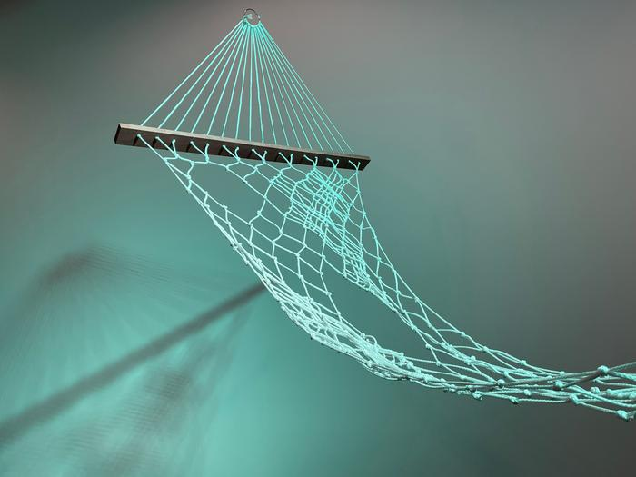

Nocturnal Baseline
Close ×

Textiles
This project translates personal sleep data into a woven structure. Recorded sleep stages are first visualized as adjacent color fields, then converted into weaving patterns defined by varying densities of thread.
Each sleep stage corresponds to a distinct material logic. Core sleep is rendered through the densest weave, forming the structural body of the hammock. Deep sleep appears as a moderately dense pattern, while REM sleep is expressed through a looser, more open weave. Periods of wakefulness are left nearly empty, registering as absence rather than form.
The work begins with bio-data that reduces embodied experience, shaped by the disruptions of everyday life, into binaries. It then transforms that data back into a material experience that can be encountered and interpreted through the body.